Datos del alumno y curso
Objetivo del proyecto
Diseñar y construir un vehículo robotizado capaz de ser controlado de forma inalámbrica mediante un teléfono celular para competencias de sumo.
Introducción
¿Qué es un robot sumo?
Es un autito robot que compite contra otro dentro de un círculo o ring. Gana el que logra empujar al oponente fuera del ring sin salirse él. Se parece al sumo japonés, pero con robots: importan la fuerza, la tracción, el diseño y el control del piloto.
¿Por qué Arduino UNO?
El Arduino UNO es el «cerebro» del robot: es una placa programable, económica y fácil de usar, ideal para aprender. Lee las órdenes que llegan y decide qué motores deben girar y en qué sentido.
¿Cómo ayuda el Bluetooth?
La tecnología Bluetooth (módulo HC-05) permite controlar el robot sin cables desde un celular o tablet, a corta distancia. El teléfono envía una letra por cada orden y el módulo se la entrega al Arduino.
El proyecto
Minecraft es un carro robot de sumo controlado por radio control (RC) mediante Bluetooth desde un teléfono. Su finalidad es competir en un enfrentamiento de sumo: empujar al robot rival fuera de la pista usando potencia, tracción y una pala frontal.
Finalidad
- Aplicar principios básicos de robótica, electrónica, mecánica y programación.
- Diseñar y construir un prototipo propio, resistente y con buena fuerza de empuje.
- Resolver problemas técnicos y explicar el proceso con claridad.
¿Cómo funciona?
El teléfono envía una letra por Bluetooth al módulo HC-05. La placa Arduino UNO la lee y, a través del shield L293D, hace girar los dos motores en el sentido necesario.
Para girar, un motor avanza y el otro retrocede, de modo que el robot gira sobre su propio eje.
Imágenes del prototipo
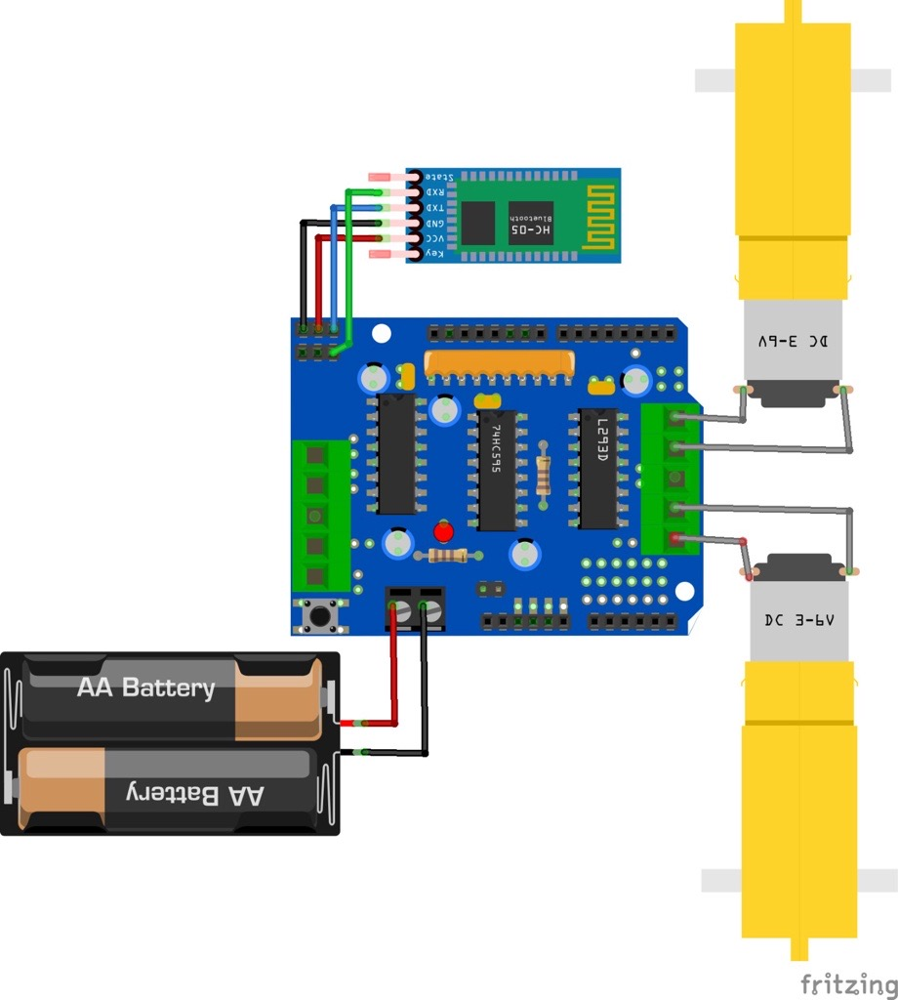
Prototipo en construcción
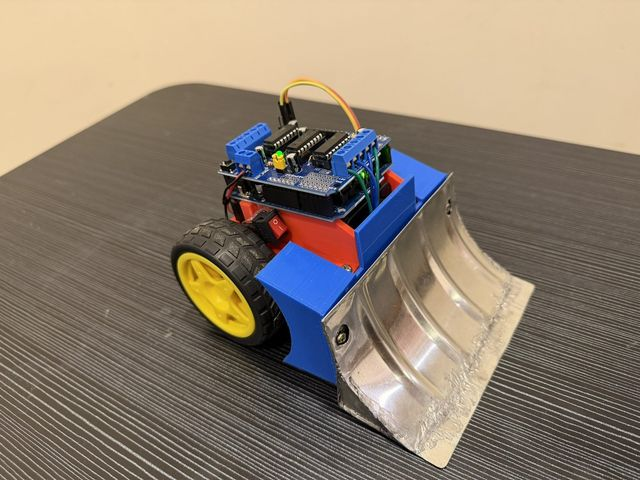
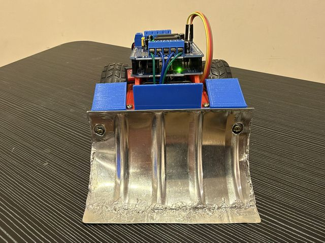
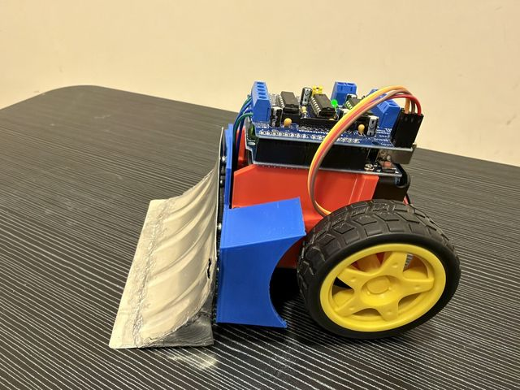
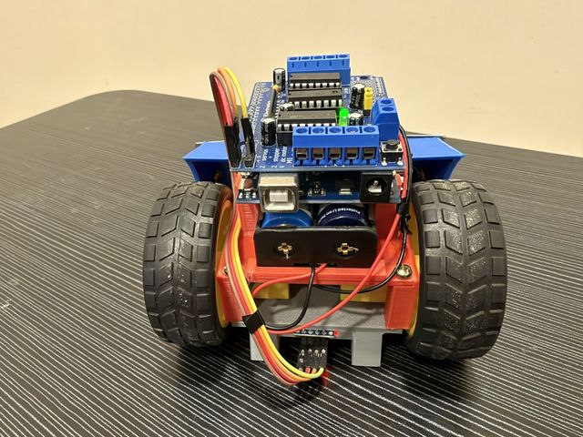
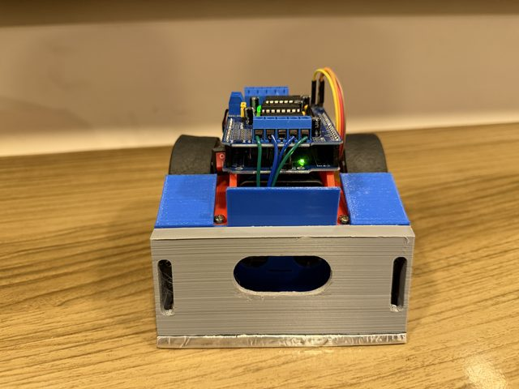
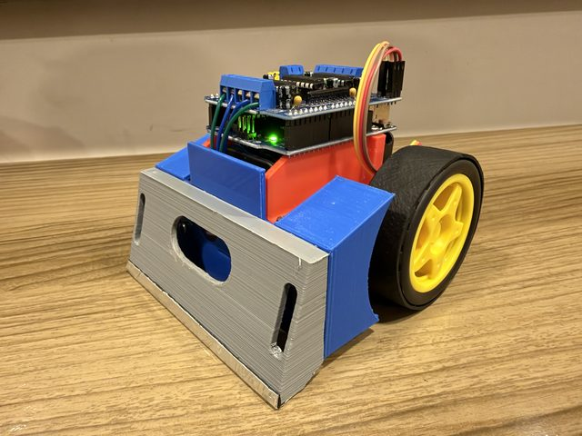
Materiales
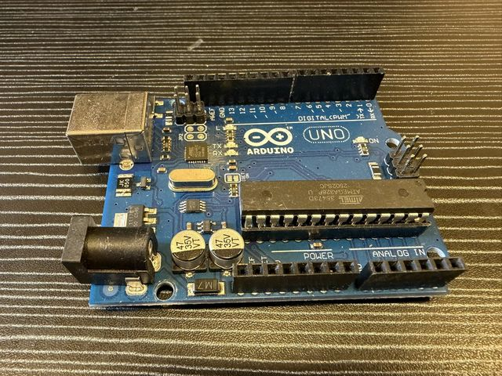
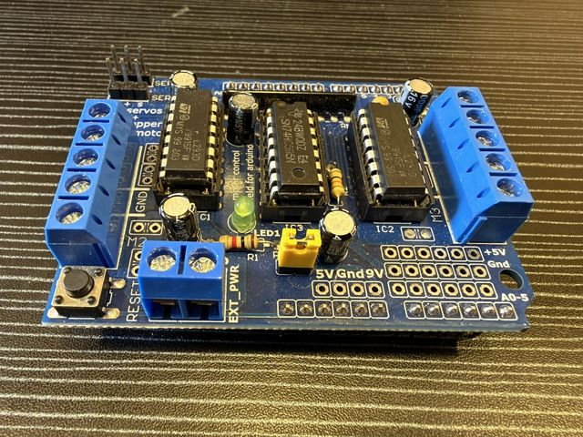
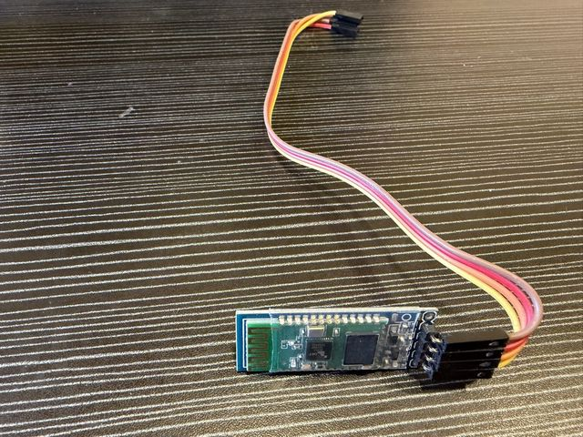
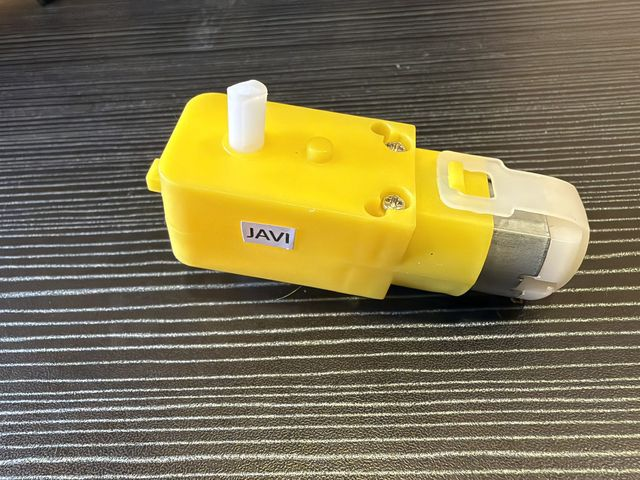
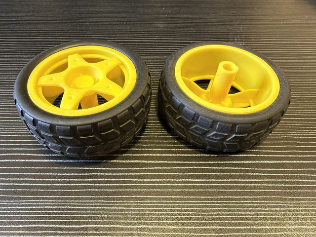
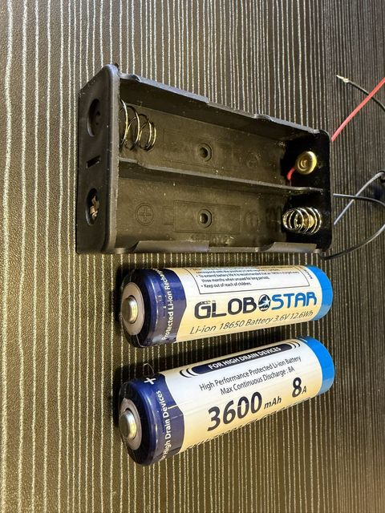
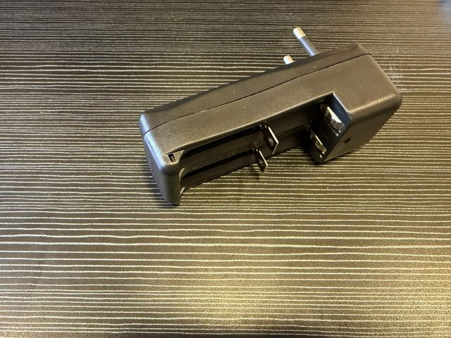
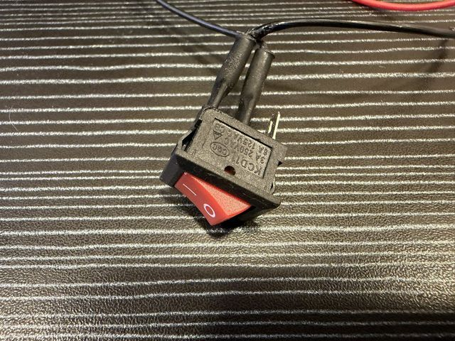
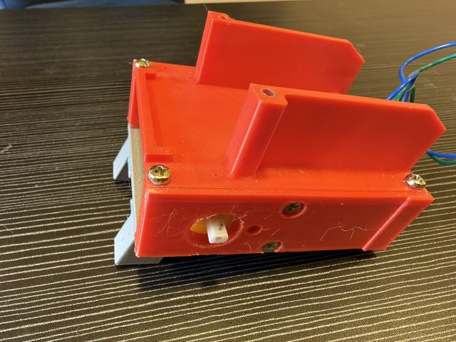
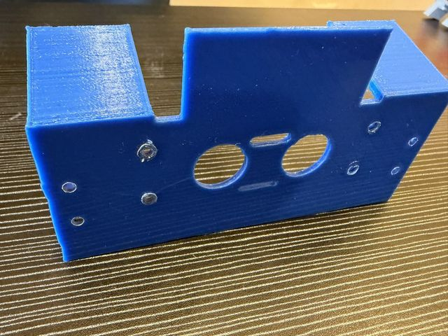
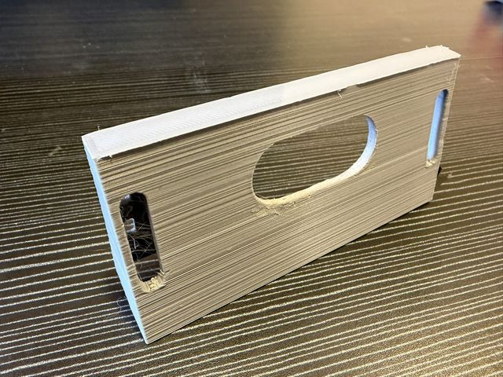
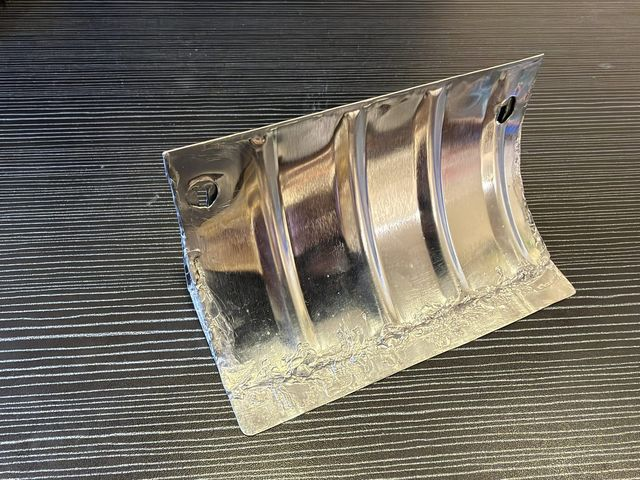
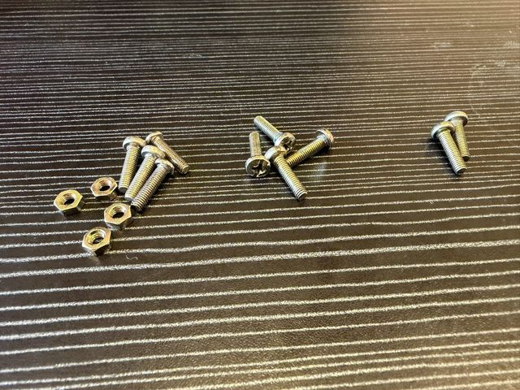
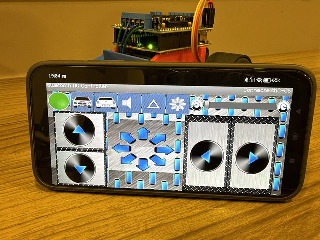
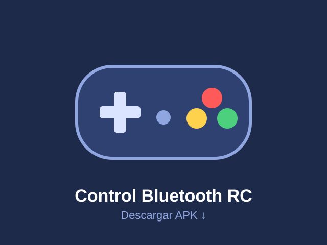
Toca una imagen para ampliarla.
Materiales utilizados
| Componente | Función |
|---|---|
| Arduino UNO | Cerebro del robot: ejecuta el programa. |
| Shield de motores L293D (74HC595) | Entrega potencia a los motores; controla velocidad y sentido. |
| 2 motores DC 3–6 V con caja reductora (amarillos) | Mueven las ruedas (conectados a M3 y M4). |
| 2 ruedas con neumático | Tracción sobre la pista. |
| Módulo Bluetooth HC-05 | Recibe las órdenes desde el teléfono. |
| Portapilas con 2 pilas AA | Fuente de energía (entrada EXT_PWR del shield). |
| Interruptor | Enciende y apaga el robot. |
| Chasis y pala frontal impresos en 3D | Estructura del robot; la pala ayuda a empujar al rival. |
| Cables | Conexiones eléctricas. |
| Teléfono con app de control Bluetooth | Control remoto. |
Procedimiento de construcción
- Diseño y chasis. Se imprimió en 3D el chasis y la pala frontal, pensados para dar estabilidad y empujar.
- Montaje mecánico. Se fijaron los dos motores con sus ruedas y la placa Arduino sobre el chasis.
- Conexión de motores. Los motores se conectaron a los bornes M3 y M4 del shield L293D.
- Conexión Bluetooth. El HC-05 se conectó al shield: VCC y GND para energía, y TXD/RXD a los pines 10 y 9 del Arduino.
- Alimentación. Se conectó el portapilas AA al borne EXT_PWR del shield, con un interruptor.
- Programación. Se cargó el programa en el Arduino IDE con las librerías AFMotor y SoftwareSerial.
- Pruebas y ajustes. Se probaron los movimientos desde el teléfono y se ajustó la velocidad de cada motor para que el robot avance recto.
Dificultades y soluciones
- El robot se desviaba porque un motor era más rápido: se compensó en el programa bajando 50 de velocidad al motor 3.
- Fuerza de empuje: se usó una caja reductora y una pala frontal para ganar torque y contacto con el rival.
Programa utilizado (Arduino)
Código completo con el que se programó el robot. Puedes copiarlo, pegar tu propia versión o descargarlo como archivo .ino.
Video del ensamblaje
Este video detalla los pasos del ensamblaje del robot.
▶ Ver el video en YouTubeConclusiones
- Aprendí a diferenciar los componentes electrónicos (Arduino, shield, motores, Bluetooth) y a interconectarlos de forma segura.
- Comprendí la importancia de la programación para darle órdenes a una máquina.
- Combiné la creatividad en el diseño físico (chasis y pala) con la lógica de la programación, probando y corrigiendo errores hasta que el robot avanzó recto.
Descargar el informe
Descarga en PDF el informe completo del proyecto: datos del alumno, descripción, imágenes, materiales, procedimiento, programa y convocatoria.
Descargar informe (PDF)